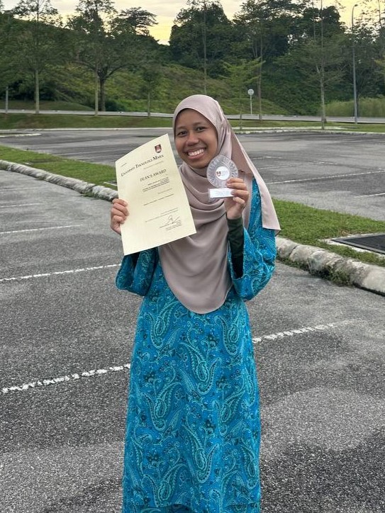

When I was in primary school, I went to SRAI Pekan Beranang and my secondary school was SAM Sungai Merab Luar. Both of my schools are in Selangor. After getting the SPM results, I got to continue studying at UiTM Campus Rembau, Negeri Sembilan. I got a course in information management which is in the field of library, archive and also a little about IT. At first I didn't know this course existed and it wasn't as famous as other courses. So, I try to challenge myself to try new things. This course has five (5) semesters in the diploma field. Semester 1 and 2 I studied at home only due to the epidemic that hit the whole world which is covid-19. So UiTM took the path to conduct classes online to prevent this virus from spreading.
Semester 3 until 5

After the covid-19 pandemic is decreasing even though it is still out there, we students are instructed to report to our respective campuses. My experience in the university world began in semester 3. But I didn't sit in college because I wanted to give way to semesters 1 and 2. So I rented close to the university area in Taman Desa Permai Kundur. Alhamdulillah, I met a good person. When I was at university I enjoyed meeting new friends who had only known each other online hihihhii. My friends are very supportive and some are even funny. Of course there are many challenges when we meet new people. no matter what, we can only be patient and keep trying to achieve our goals. During semesters 1, 2, and 3 I was not included in the dean's list. Who is not jealous of those who are successful right? So I tried to focus on semester 4 and thank God I managed to get a dean after the efforts I made. And in this final semester I want to try to go up on stage and make my parents proud.
Favorite Show
As you guys all know, I love to watch anime. Anime is hand-drawn and computer-generated animation originating from Japan. Outside Japan and in English, anime refers specifically to animation produced in Japan. However, in Japan and in Japanese, anime (a term derived from a shortening of the English word animation) describes all animated works, regardless of style or origin. Many works of animation with a similar style to Japanese animation are also produced outside Japan. Video games sometimes also feature themes and artstyles that can be considered as "anime". My favorite anime is Jujutsu Kaisen. I just love the animaion, the art design from the author: Gege Akutami. My favorite character is Gojo Satoru a man with the blind fold one and have a white hair. Above, I prepared the opening and the main song for this anime. I hope you guys like it.